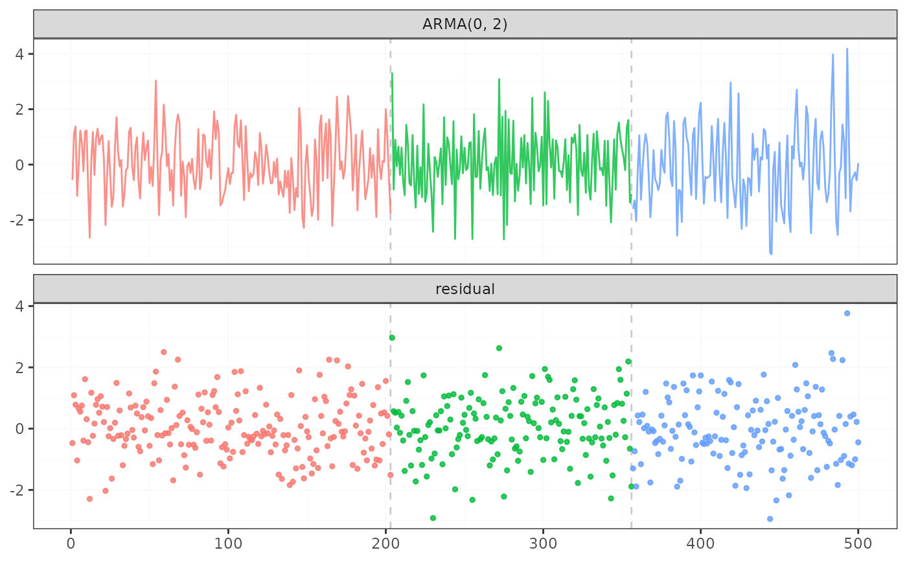

fastcpd_ts() and fastcpd.ts() are wrapper functions for
fastcpd() to find change points in time series data. The function is
similar to fastcpd() except that the data is a time series and the
family is one of "ar", "var", "arma", "arima" or
"garch".
Arguments
- data
A numeric vector, a matrix, a data frame or a time series object.
- family
A character string specifying the family of the time series. The value should be one of
"ar","var","arima"or"garch".- order
A positive integer or a vector of length less than four specifying the order of the time series. Possible combinations with
familyare:"ar", NUMERIC(1): AR(\(p\)) model using linear regression."var", NUMERIC(1): VAR(\(p\)) model using linear regression."arima", NUMERIC(3): ARIMA(\(p\), \(d\), \(q\)) model usingforecast::Arima()."garch", NUMERIC(2): GARCH(\(p\), \(q\)) model usingtseries::garch().
- ...
Other arguments passed to
fastcpd(), for example,segment_count. One special argument can be passed here isinclude.mean, which is a logical value indicating whether the mean should be included in the model. The default value isTRUE.
Value
A fastcpd object.
Examples
# \donttest{
set.seed(1)
n <- 400
w <- rnorm(n + 4, 0, 0.1)
x <- rep(NA, n)
for (i in 1:200) {
x[i] <- w[i + 4] - 5 / 3 * w[i + 3] + 11 / 12 * w[i + 2] - 5 / 12 * w[i + 1] +
1 / 6 * w[i]
}
for (i in 201:n) {
x[i] <- w[i + 4] - 4 / 3 * w[i + 3] + 7 / 9 * w[i + 2] - 16 / 27 * w[i + 1] +
4 / 27 * w[i]
}
result <- fastcpd.ts(
x,
"arma",
c(0, 4),
lower = c(-2, -2, -2, -2, 1e-10),
upper = c(2, 2, 2, 2, Inf),
line_search = c(1, 0.1, 1e-2),
trim = 0.05
)
summary(result)
#>
#> Call:
#> fastcpd.ts(data = x, family = "arma", order = c(0, 4), lower = c(-2,
#> -2, -2, -2, 1e-10), upper = c(2, 2, 2, 2, Inf), line_search = c(1,
#> 0.1, 0.01), trim = 0.05)
#>
#> Change points:
#> 209
#>
#> Cost values:
#> -188.7341 -168.4595
#>
#> Parameters:
#> segment 1 segment 2
#> 1 -1.626949633 -1.366413227
#> 2 0.925842329 0.850647424
#> 3 -0.472212640 -0.677337192
#> 4 0.181290578 0.193108171
#> 5 0.009523233 0.009914231
plot(result)

# }